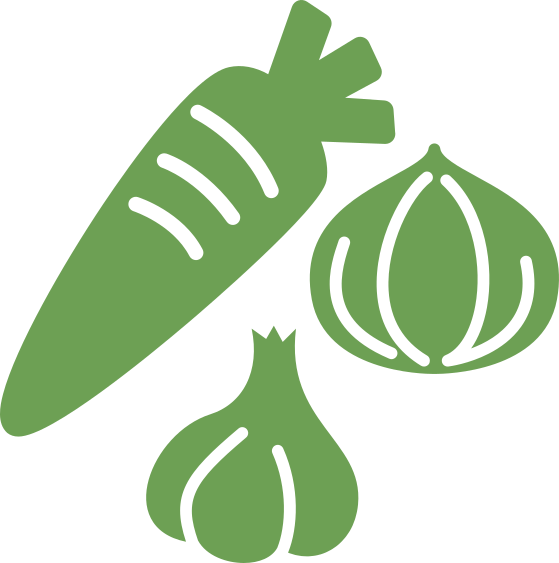
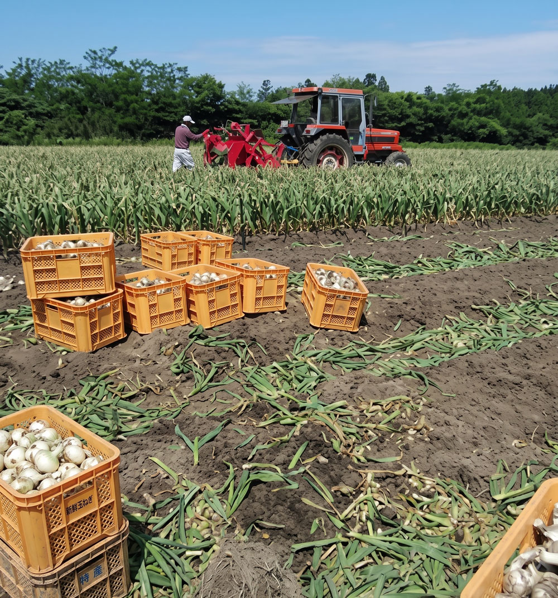
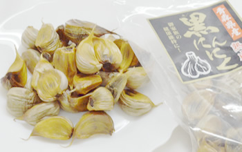
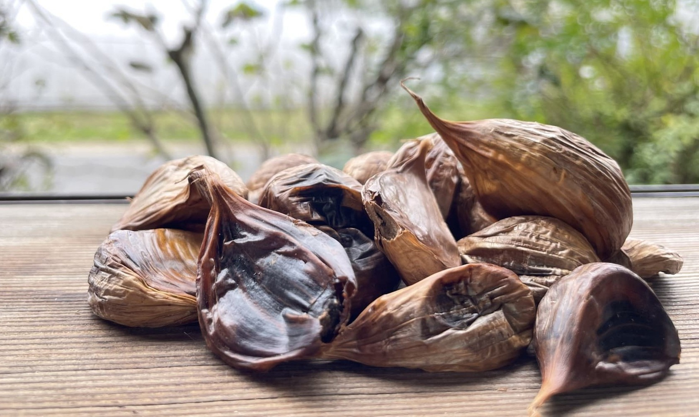
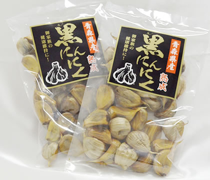
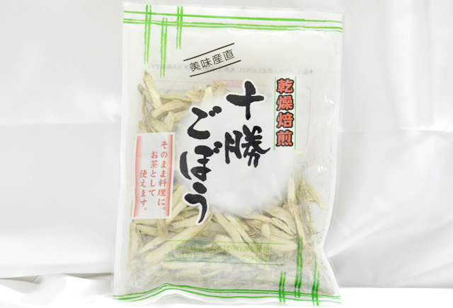
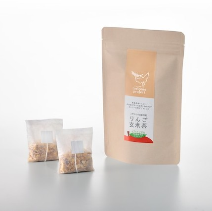
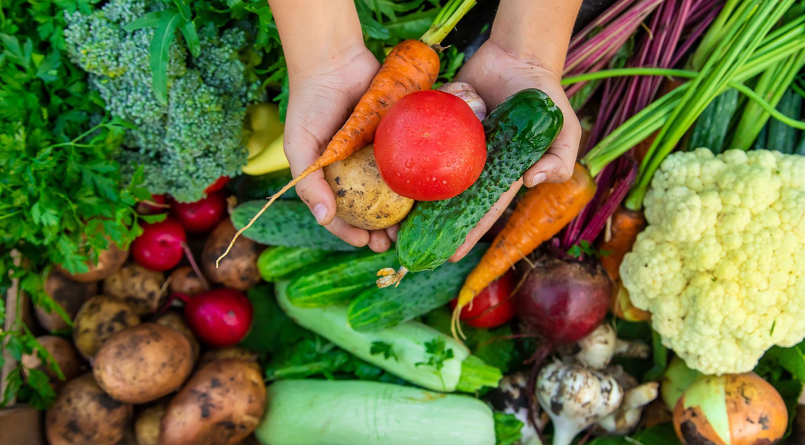

About Us十和田農産物販売合同会社について
青森県十和田市から、
身体にやさしい食をお届け
十和田農産物販売合同会社は、青森県十和田市にある農産物・加工食品の卸売販売会社です。
青森県産のにんにくを使用した黒にんにくをはじめ、乾燥野菜、乾燥きのこ、ごぼう茶、切り干し大根など、日々の食卓に取り入れやすい商品を取り扱っています。
地元の農産物や全国各地の特色ある食品を通して、生産者様・小売店様・消費者様をつなぎ、食の健康と地域の魅力を広げるお手伝いをしています。
一般のお客様はもちろん、小売店様のお取引相談も承っております。

Service
事業内容

農産物・加工食品の卸売販売
青森県産のにんにく、ごぼう、長芋をはじめ、地域の農産物や加工品を取り扱っています。
小売店様や事業者様に向けたお取引のご相談も承ります。

黒にんにくの販売
青森県産にんにくを使用した熟成黒にんにくを販売しています。甘みのある味わいで、毎日の健康的な食生活に取り入れやすい商品です。
乾燥野菜・乾燥きのこの販売
乾燥ごぼう、切り干し大根、乾燥きのこなど、保存しやすく調理にも使いやすい商品を取り扱っています。味噌汁、炊き込みご飯などに。
ごぼう茶・加工品の販売
青森県産ごぼうを使用したごぼう茶や、地域の特色を活かした加工品をご用意。ご自宅用はもちろん、贈り物や店舗での販売商品としても。
Features
私たちの3つのこだわり
熟成・乾燥で
素材のうまみを引き出す
食品を熟成・乾燥させることで、長期保存しやすくなり、素材本来のうまみや香りを楽しめる商品になります。手軽に調理へ取り入れやすく、毎日の食卓に無理なく使える食品づくりを大切にしています。
生産者と消費者を
つなぐ商品づくり
地域の農産物や特色ある食品を通して、生産者様・小売店様・消費者様をつなぐことを大切にしています。地元の魅力ある食材を県内外へ広げ、より多くの方に青森の恵みを届けるお手伝いをしています。
身体にやさしい食材を
届けたいという想い
毎日の食事に取り入れやすい、身体にやさしい食材をお届けすることを大切にしています。黒にんにくや乾燥野菜、ごぼう茶など、日々の食生活を楽しく支える商品を取り揃えています。
Products
おすすめ商品

青森県産熟成 黒にんにく
内容量：150g
青森県産にんにくを専用機械でじっくり熟成・発酵させた黒にんにくです。熟成度合いによる味のバランスに着目し、苦みや酸味を抑え、自然な甘みを感じられる味わいが特徴。毎日の食生活に取り入れやすい商品です。

乾燥焙煎 十勝ごぼう
内容量：35g
十勝産ごぼうを使用した、香ばしい乾燥焙煎ごぼうです。炊き込みご飯やお味噌汁には水戻し不要。炒め物にはぬるま湯で戻して。戻し汁はごぼう茶としてもお楽しみいただけます。

りんご玄米茶
青森県産玄米をじっくり焙煎し、青森県産りんごを合わせたやさしい味わいのお茶です。玄米の香ばしさと、りんごのほのかな甘み・酸味が楽しめます。ノンカフェインで夏場はアイスでもおすすめです。
Order Flow
ご注文の流れ
ご注文・お問合せ
一般のお客様はWEB・FAXより。お取引ご希望の企業様はお電話等でご連絡ください。
内容の確認
ご希望の商品内容を確認し、送料を含めた金額をご案内いたします。
お振込み
金額確定後、指定の期日内にお振込みをお願いいたします。
商品発送
ご入金確認後、できるだけ早く発送できるよう手配いたします。
ご注文前にご確認ください
- 送料・振込手数料はお客様負担となります。
- 全国対応しておりますが、北海道・沖縄・離島は追加送料が発生する場合がございます。
- 金額確定後、期日内にお振込みが確認できない場合は、自動キャンセルとなる場合がございます。
- 商品の在庫状況や時期により、ご希望の商品をご用意できない場合がございます。
- 小売店様や企業様のお取引については、お電話またはお問い合わせフォームより事前にご相談ください。

Message
私たちの想い
食の健康と地域の恵みを、
まっすぐに届けたい
十和田農産物販売合同会社では、
青森県十和田市を拠点に、地域の農産物や加工品を全国へお届けしています。
毎日の食卓に取り入れやすい商品を通して、
皆さまの健やかな食生活を支えたいと考えています。
店舗で取り扱う商品を検討されている小売店様も、まずはお気軽にご相談ください。
青森の恵みを、心を込めてお届けいたします。
Access
店舗情報・アクセス
- 店舗名
- 十和田農産物販売合同会社
- 住所
- 〒034-0011
青森県十和田市稲生町１６−５１ - 電話番号
- 050-5448-7624
- 営業時間
- 9：00～17：00
- 定休日
- 日曜日